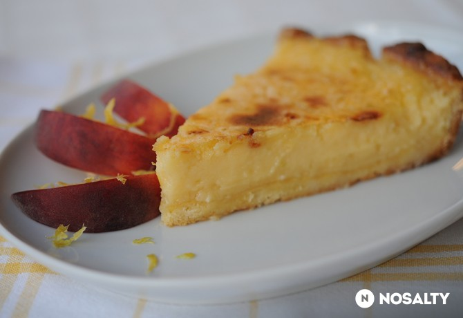

Citromkrémtorta
Vissza
Forrás

Story
Ha nyár, akkor a csokoládés édességek feledésbe merülnek és a gyümölcsös finomságok veszik át helyüket. Egyik kedvenc desszertem a nagy melegekben a citromtorta. Ez most egy krémes verzió. (Forrás: Jamie Oliver: A pucér szakács)
Hozzávalók
-
Az omlós tésztához
- 100 g porcukor
- 125 g vaj (szobahőmérsékletű)
- 1 csipet só
- 250 g finomliszt
- 2 db tojássárgája
- 3 ek tej (hideg)
- 1 db tojás (a tészta kenéséhez)
-
A citromkrémhez
- 350 g cukor (kristály)
- 8 db tojás
- 350 ml habtejszín
- 100 ml citromlé (frissen facsart )
- 200 ml limelé (frissen facsart)
Elkészítés
- A tésztához a vajat a cukorral és a sóval kikeverjük. (Én lyukas közepű fakanalat használtam hozzá.) Hozzáadjuk a lisztet és a tojás sárgákat, és a lehető legkevesebb mozdulattal összedolgozzuk (morzsás állagú lesz). A végén beleöntjük a tejet és addig keverjük, míg nagyjából összeáll a tészta, duci hengerré formáljuk és fóliába csomagolva a hűtőben pihentetjük legalább egy órán át. (Az omlós tészta titka, hogy ne dolgozzuk, gyúrmáljuk agyon, máskülönben nyúlóssá válik.)
- A pihentetési idő leteltével a hengerből fél centis szeleteket vágunk, és kibélelünk velük egy 30 centiméter átmérőjű piteformát, egymáshoz nyomkodva őket az illesztéseknél, úgy hogy egyenletes legyen mindenhol. 180 fokra előmelegített sütőbe dugjuk (légkeverésen) 12 percre.
- Közben elkészítjük a citromkrémet: a tojást kikeverjük a cukorral, majd lassan hozzáadjuk a citrom-lime levet és a habtejszínt.
- A félkész tésztát alaposan megkenjük tojással (megakadályozva ezáltal, hogy a tészta magába szívja a krémet) és megtöltjük a most még meglehetősen folyós krémmel.
- 180 fokos sütőben kb. 30-40 perc alatt megsül. Akkor kell kivenni, mikor a krém a torta közepén még rezeg.
- Egy órán át hűlni hagyjuk, és ez idő alatt a citromkrém is megszilárdul a középső részen (előbb semmiképpen ne vágjuk meg a tortát, mert szétfolyik, nyúlik az egész, plusz hidegen finom).
Statisztika
| beküldve: |
2008.07.10. |
| tegnapi nézettség: |
7 |
| össznézettség: |
139 294 |
| elküldve: |
27 |
| receptkönyvben: |
1 336 |
| elkészítve: |
22/44 |
| Facebookon megjelent: |
1 |